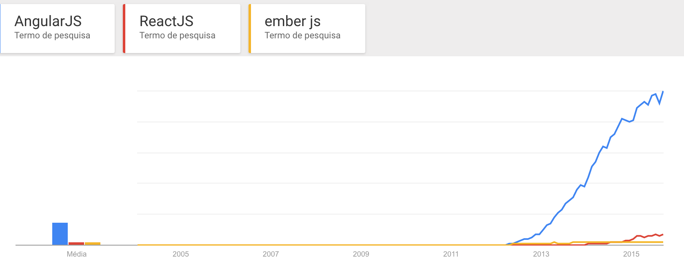
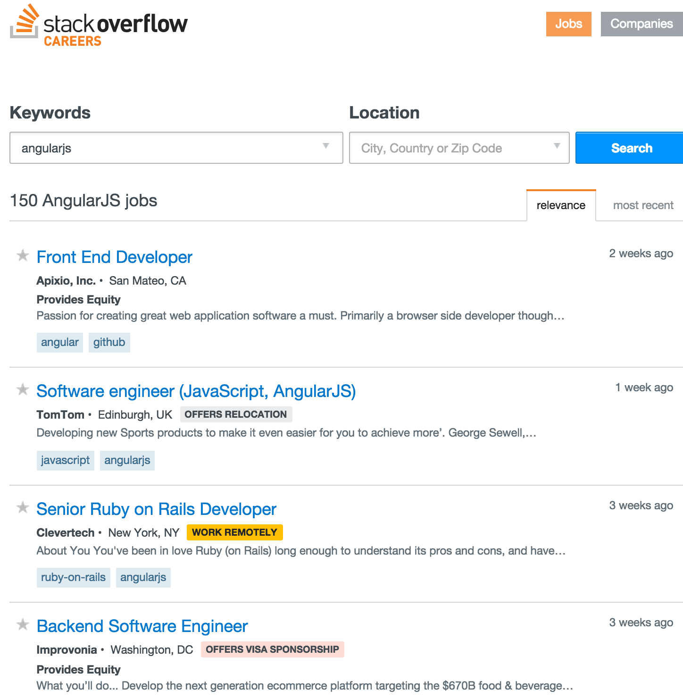
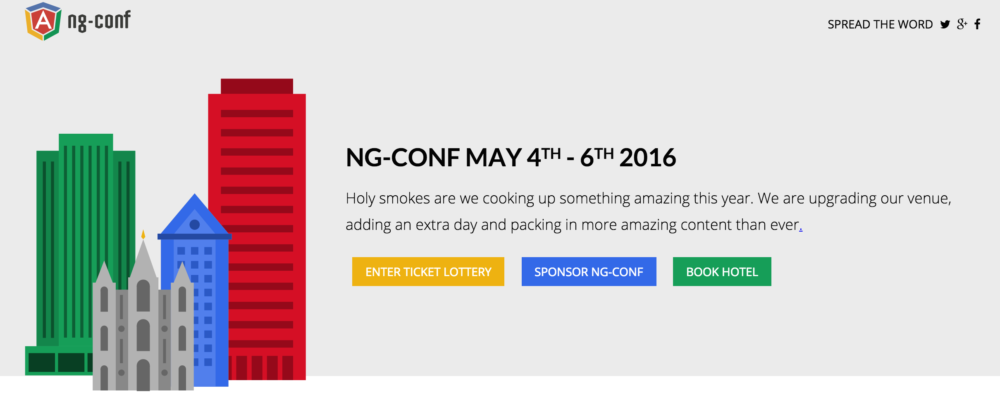

O que é AngularJS?
Framework mantido pela Google que é utilizado para criar aplicações
Single Page. Além disso, ele permite ao programador criar suas próprias tags HTML.
Pontos Fortes do AngularJS
Injeção de Dependência
Modo com que o Angular faz sua modularização.
```js
angular.module('app.principal',
['app.marketing',
'app.financeiro',
'app.desenvolvimento'
])
```
Directives
Modo com o que o programador pode definir suas próprias tags HTML.
Porquê apostar no Angular?
Quantidade de pesquisas no google sobre o assunto.

O campo de trabalho é grande.

Conferências inteiras dedicadas ao Angular

Mas como eu faço pra aprender Angular?